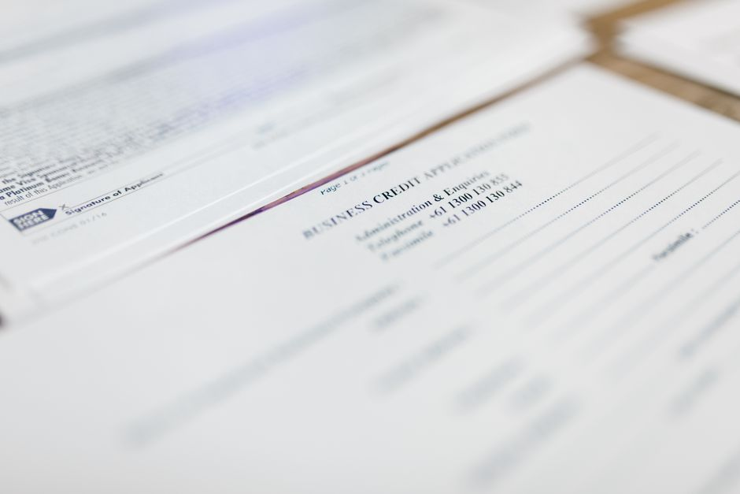

창업지원 사업 508개 중 내 사업은 어디 — 융자·기술개발·사업화가 90%

정부와 지방자치단체가 2026년에 운영하는 창업지원사업은 508개, 예산은 3조 4,645억원입니다. 사업을 찾는 사람이 자주 하는 실수는 508개를 하나씩 읽는 것입니다. 508개는 열거일 뿐이고, 실제 신청 창구는 유형 8개만 하면 끝납니다. 융자·보증, 기술개발, 사업화, 시설·공간·보육, 글로벌 진출, 행사·네트워크, 멘토링·컨설팅·교육, 인력 — 이 8개 중 내가 필요한 것은 대체로 하나이거나 둘입니다. 이 글은 508개를 8개 유형으로 접고, 유형별로 예산이 얼마이고 어느 기관 창구로 가는지까지 한 번에 정리합니다.
2026년 통합공고 기준 수치이며, 개별 사업의 접수 기간·자격은 해당 부처와 지자체 공고에서 별도로 확인해야 합니다. 이 글의 표는 통합공고 기준으로만 비교한 것입니다.
30초 요약
목차
| 구분 | 내용 |
|---|---|
| 누가 | 예비창업자·업력 7년 이하 창업기업, 그리고 창업지원사업이라는 이름의 창구를 처음 찾는 1인 사업자 |
| 무엇 | 2026년 창업지원사업 통합공고 — 111개 기관 508개 사업, 예산 3조 4,645억원(전년 대비 1,705억원 증가) |
| 구조 | 사업 유형 8개 구분 — 융자·보증 1조 4,245억(41.1%), 기술개발 8,648억(25.0%), 사업화 8,151억(23.5%) 3개 유형이 89.6% |
| 어디 | 중앙부처 88개 사업 3조 2,740억(중기부 93.9%), 지자체 420개 사업 1,905억 — 세부 공고는 기관별 누리집과 K-Startup 포털 |
1. 508개를 열지 말고 유형 8개로 접으세요
통합공고는 2016년부터 있어 왔고, 2026년은 지원 기관 111개에 사업 508개입니다. 전년(429개)보다 79개 늘었습니다. 목록을 열면 사업명만 508줄이고, 이름은 서로 비슷하며, 마감은 제각각입니다. 여기서 시간을 다 씁니다.
구분은 다 정해져 있습니다. 통합공고는 사업 유형을 8개로만 나눕니다. 사업화, 기술개발, 시설·공간·보육, 멘토링·컨설팅, 행사·네트워크, 융자·보증, 인력, 글로벌 진출입니다. 2026년에는 중앙부처의 보증사업 5개(비예산)가 융자 유형에 새로 포함됐습니다. 그러니 508개를 볼 게 아니라 내가 돈이 필요한지, 기술개발비가 필요한지, 공간이 필요한지부터 정하면 됩니다. 그 다음 그 유형 안에서 기관을 고르는 순서로 읽으면 목록의 9할이 건너뛉니다.
2. 유형별 예산 — 세 개가 90%
508개 사업의 예산을 유형별로 모으면 3개 유형에 89.6%가 몰려 있습니다. 나머지는 눈감아도 됩니다.
| 유형 | 예산(억원) | 비중 | 사업 수 |
|---|---|---|---|
| 융자·보증 | 14,245 | 41.1% | 17 |
| 기술개발(R&D) | 8,648 | 25.0% | 11 |
| 사업화 | 8,151 | 23.5% | 181 |
| 시설·공간·보육 | 1,633 | 4.7% | 158 |
| 글로벌 진출 | 1,195 | 3.4% | 32 |
| 행사·네트워크 | 401 | 1.2% | 49 |
| 멘토링·컨설팅·교육 | 362 | 1.0% | 57 |
| 인력 | 10 | 0.1% | 3 |
| 합계 | 34,645 | 100.0% | 508 |
표에서 이상한 곳을 짚어두겠습니다. 융자·보증은 예산 1조 4,245억원에 사업 수가 17개뿐입니다. 사업당 금액이 가장 큽니다. 반대로 사업화는 사업 수 181개에 예산 8,151억원 — 사업당 규모가 가장 작고 경쟁이 가장 붙는 칸입니다. 같은 '지원받는다'라도 이 두 칸의 확률은 전혀 다릅니다.
3. 융자·보증: 1조 4,245억원, 사업은 17개뿐
가장 큰돈인데 문은 가장 좁습니다. 융자·보증 유형은 17개 사업에 1조 4,245억원입니다. 1인 사업자에게 이 칸이 실적인 이유는 자금이 빌려 남는 형태로 오기 때문입니다. 보조금이 지출 증빙을 요구하며 사후에 정산되는 것과 다릅니다.
다만 이 글의 융자 칸은 창업지원 통합공고의 융자입니다. 운영 자금 성격을 곧바로 노리는 사업자라면 같은 자금이라도 소상공인 정책자금 창구가 별도입니다. 창구가 다르고 접수 화면이 다릅니다. 어느 쪽으로 들어갈지는 자금 성격으로 갈립니다: 창업 단계의 사업비·기술개발비라면 통합공고, 이미 운영 중인 사업장의 운영자금·대환이면 소상공인 정책자금입니다. 두 창구를 섞어서 지원서를 쓰면 둘 다 통과하기 어렵습니다.
융자·보증 조건은 분기별로 고시가 바뀌고 접수 가능 여부가 예산에 묶입니다. 이 칸을 노린다면 조건 자체보다 지금 접수 창구가 열려 있는지가 먼저입니다. 자금별 금리·한도를 한 화면으로 보는 쪽이 목록 508개를 읽는 것보다 실용입니다.
4. 기술개발: 1,668개사·최대 3년 15억원
기술개발 예산은 8,648억원으로 전년 대비 2,356억원 늘었습니다. 중기부의 창업성장기술개발 사업이 7,864억원(전년 대비 1,904억원 증액)으로, 업력 7년 이하 창업기업 약 1,668개사를 대상으로 합니다. 통합공고 기준 신산업 창업분야는 업력 10년 이하까지 예외로 인정됩니다.
여기서 '출연'에 주목할 필요가 있습니다. 갚아야 하는 돈이 아니라 사업비로 받는 형태입니다. 대신 그 만큼 심사·정산·평가 부담이 붙습니다. 지원 한도는 트랙마다 다릅니다. 초기 기술창업기업을 검증하는 디딤돌은 최대 1.5년에 2억원(정부지원 75% 이내), 민간투자와 연계하는 TIPS는 일반 트랙 최대 2년에 8억원, 딥테크 트랙 최대 3년에 15억원입니다. 즉 15억이라는 숫자는 가장 깊은 트랙의 상한이고, 첫 도전 기업이 만나는 첫 칸은 2억원입니다. 그래도 이 칸 자체가 1인 사업자한테 열려 있다는 사실이 중요합니다 — 기술이 있으면 사업비를 받을 수 있는 창구라는 뜻입니다.
기술개발 칸은 대학·연구기관 쪽 문도 열려 있습니다. 과기부의 공공기술기반 시장연계 창업탐색지원이 326억원(247개 실험실), 실험실 특화형 창업선도대학 사업이 148억원(153개 실험실)입니다. 2026년 신규로 AX혁신기업창의기술개발(75억원, 27개 과제)이 늘었고, 반도체·디스플레이, 이차전지 등 12대 전략기술과 AX 제품·서비스 분야에 전년대비 396억원 증가한 708억원이 배정됐습니다. 연구실을 나와 창업하는 경로라면 이 칸이 본진입니다.
5. 사업화: 181개 사업에 나뉘어 있는 돈
사업화 예산은 8,151억원으로 전년 대비 485억원 늘었습니다. 그런데 사업 수가 181개입니다. 돈이 많다고 보이기 어렵습니다. 중기부의 예비·초기·도약 패키지 사업 예산은 전년대비 240억원 증액된 1,778억원으로, 성장 단계에 맞춘 사업화 자금과 AI 교육훈련 등 창업 프로그램을 함께 지원하고, 초격차 스타트업 프로젝트가 1,456억원(신산업 분야 혁신성장·해외시장 진출)입니다.
지자체까지 합치면 사업 수는 더 늘어난 만큼 여기서 중요한 건 '기관이 내 지역·내 업종을 보는가'입니다. 문체부는 2026년부터 관광 오픈이노베이션 프로그램을 신설해 30억원으로 관광 분야 창업기업 30여개사를 선정해 관광 맞춤형 사업실증비와 투자유치를 지원합니다. 이 항목은 관광 외 업종엔 존재하지 않습니다. 사업화가 경쟁이 붙는 칸인 이유는 자격이 아니라 분야가 좁다는 데 있습니다.
6. 기관이 아니라 창구로 찾아야 합니다
기관별로 보면 돈은 한 곳에 몰려 있습니다. 중앙부처 15개 부처가 88개 사업 3조 2,740억원이고, 그중 중기부가 3조 734억원으로 중앙부처의 93.9%입니다. 이어 과기부 846억원, 문체부 400억원, 농식품부 317억원 순입니다.
| 중앙부처 | 사업 수 | 예산(억원) | 비중 |
|---|---|---|---|
| 중기부 | 35 | 30,734 | 93.9% |
| 과기부 | 10 | 846 | 2.6% |
| 문체부 | 9 | 400 | 1.2% |
| 농식품부 | 9 | 317 | 1.0% |
| 기후부 | 2 | 224 | 0.7% |
| 지재처 | 2 | 83 | 0.3% |
| 그 외 9개 부처 | 21 | 936 | 2.9% |
| 중앙부처 합계 | 88 | 32,740 | 100.0% |
지자체는 광역 17개·기초 79개가 420개 사업 1,905억원입니다. 사업 수만 보면 지자체가 지자체가 420개로 중앙부처의 5배입니다. 돈은 작지만 지역·업종에 맞춘 문은 지자체 쪽이 훨씬 많습니다. 서울 390억원(42개), 경남 197억원(42개), 경기 192억원(70개), 경북 136억원(32개), 전북 125억원(34개), 대전 123억원(14개) 순입니다.
지역 사업은 규모가 작아도 붙는 값이 낮습니다. 서울시는 4개 창업허브(115억원)로 사무공간과 투자연계 네트워킹을, 인천시는 기업수요 맞춤형 기술개발사업(48억원)으로 투자자가 발굴한 기업의 기술개발을, 전북도는 농생명분야 대표기업 육성(20억원)을, 대전시는 재도전혁신캠퍼스(6억원)를 운영합니다. 2026년 처음으로 금융위(창업기업 보증사업 등 4개·비예산)와 산림청(청년 산림창업 마중물 6억원, 산림분야 창업자 16명)이 공고에 참여했습니다.
그러니 검색 순서는 '유형 → 기관(중기부 또는 내 광역·기초) → 개별 공고'입니다. 세부 사업 공고는 통합공고로 한꺼번에 뜨지 않고 해당 부처와 지자체 누리집에서 개별 실시되고, 통합 목록은 K-Startup 포털에서 조회됩니다.
7. 선정 전에 알아두면 손해 줄어드는 두 가지
2026년은 통합공고와 함께 관리지침이 개편됐습니다. 돈이 늘어난 쪽보다 이쪽이 실무자에게 더 영향이 큽니다.
- 집행 가능 범위가 넓어졌습니다 — 외주용역비는 사업완료 후 일시납 원칙에서 벗어나 유연하게 분할 지급할 수 있도록 바뀌었고, 사업 참여기간 내 발생한 지식재산권 비용만 지원하던 방식에서 사업 전에 출원한 지식재산권 유지 비용까지 지원 대상에 포함됩니다. 기술 침해 소송보험료도 지급 가능한 방향으로 개편 예정입니다.
- 거짓·부정 참여 제한은 3년에서 5년으로 늘어났습니다 — 사업비를 거짓·부정한 방법으로 교부받거나 참여하면 참여 제한 기간이 기존 3년에서 5년으로 변경됐습니다. 정부지원금으로 구축한 장비는 사업이 끝난 뒤에도 운영·관리 체계가 강화됩니다. 실수로 정산 서류를 흘리면 다음 지원이 몇 년 막힐 수 있다는 뜻입니다.
8. 오늘 결정 체크리스트
- ☐ 필요 자금 성격 정하기 — 운영자금이면 소상공인 정책자금, 창업 사업비·기술개발비면 통합공고
- ☐ 통합공고에서 유형 8개 중 대상 유형 1~2개만 고르기 (전체 목록 열지 않기)
- ☐ 기술개발 후보면 업력 7년 이하 해당 여부 확인 — 미해당이면 사업화·시설 칸으로 이동
- ☐ 중앙부처(중기부)와 내 광역·기초 지자체 누리집 양쪽을 모두 확인 — 사업 수는 지자체가 420개
- ☐ 지자체 사업은 지역·업종 한정 조건을 먼저 확인 — 조건 밖이면 시간 낭비
- ☐ 정산·집행 부담 감당 가능 여부 판단 — 보조금은 사후 정산, 융자는 실행 순서
- ☐ 신청 전 자가진단으로 자금 성격·자격부터 걸러보기
- ☐ 패키지·프로젝트계 사업은 동시수행 불가 목록 확인 — 여러 칸에 중복 신청은 돼도 수행은 하나만
통합공고의 융자 칸과 별도 창구인 소상공인 정책자금의 차이는 직접대출이냐 보증부대출이냐에서 다룹니다. 지금 열려 있는 자금 창구를 한 화면으로 보려면 정책자금 지도를 쓰세요. 신청 서류는 신청 서류 체크리스트로 같은 날 끝내두면 됩니다.
바로 가기
같이 읽기: 4분기 정책자금 접수 4연전 · 우대금리 5종 총정리 · 내 자격으로 먼저 진단 · 실무 도구 전체